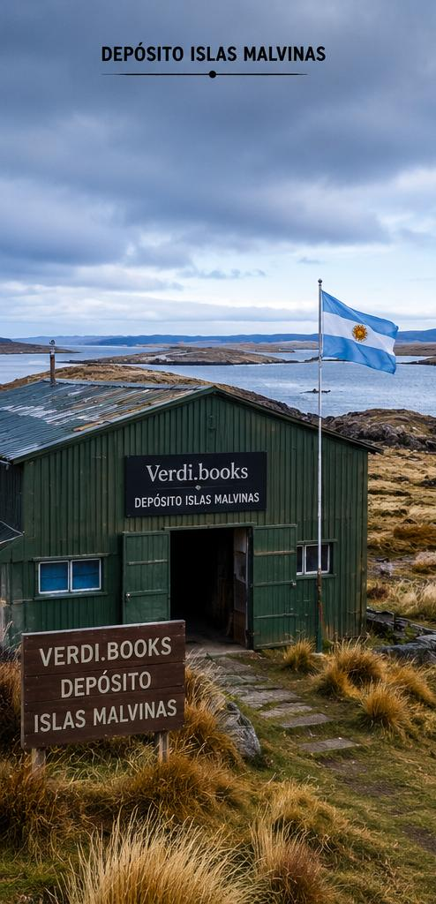
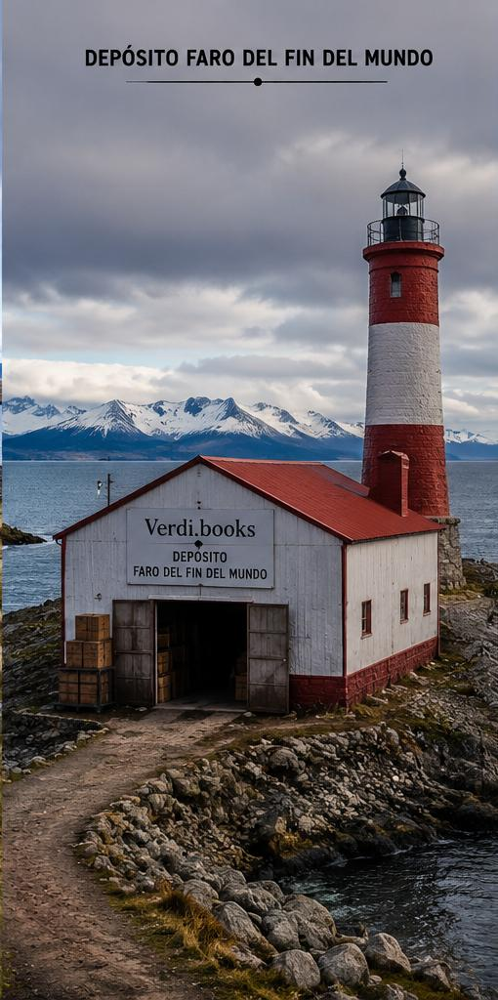
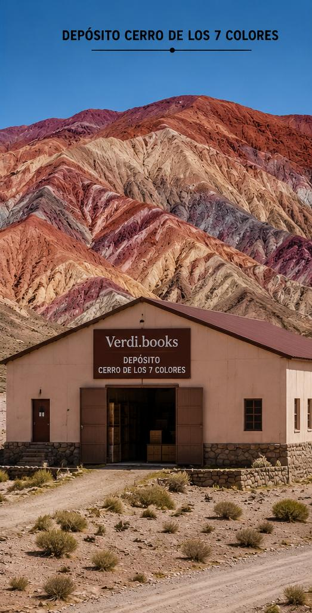

Nuestra historia
todo comenzó en 1982, cuando nació nuestro primer depósito en las Islas Malvinas. Allí se resguardaron los primeros libros históricos relacionados con las islas, dando inicio a una colección que con el paso de los años fue creciendo gracias a la dedicación y el amor por la lectura.
Nuestra misión
Nuestro objetivo es preservar, compartir y acercar libros y artículos coleccionables a lectores y coleccionistas de todo el país. Cada ejemplar forma parte de una historia y merece encontrar un nuevo hogar donde siga siendo valorado.
Nuestra colección
Disponemos de una inmensa variedad de libros para todos los gustos. Desde novelas, historia y poesía hasta ediciones especiales y artículos de colección. Trabajamos constantemente para incorporar nuevos títulos y ofrecer un catálogo cada vez más amplio.
Nuestros depósitos
Con el crecimiento de la colección fue necesario ampliar nuestro espacio de almacenamiento. Hoy contamos con tres depósitos ubicados en lugares emblemáticos de la Argentina:
-

📚 Islas Malvinas, donde comenzó nuestra historia.

🌊 Faro del Fin del Mundo, hogar de una gran parte de nuestra colección literaria.

🏔️ Cerro de los Siete Colores, donde conservamos cientos de títulos y artículos coleccionables.
Nuestro compromiso
En Verdi.books creemos que cada libro tiene una historia que merece ser descubierta. Por eso cuidamos cada ejemplar con dedicación y nos esforzamos por brindar una atención cercana y un servicio de calidad para todos nuestros clientes.